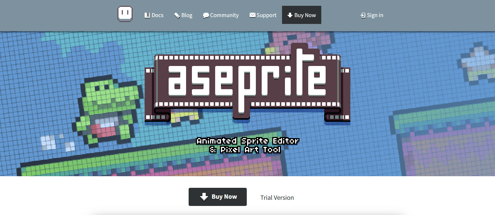
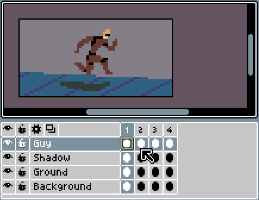

O Aseprite é um programa de criação de pixel art que possui várias funcionalidades extremamente úteis, principalmente se seu objetivo é criar um jogo com esse tipo de éstética. O programa se tornou um padrão da indústria de jogos pelas suas features voltadas à area.

O programa possibilita a criação de artes em pixel art, além da animação dessas artes de forma intuitiva. Quando se trata da criação de jogos, o Aseprite possui diversas funções que visam facilitar sua experiência, como a possibilidade de exportar suas artes como uma sprite sheet e um modo de criação de tiles para uma criação de cenários mais fácil.

O programa também conta com um site oficial, onde se encontra a documentação inteira do Aseprite, tutoriais de como usar a aplicação, um blog com atualizações sobre o programa e até uma área para interação da comunidade.
É um programa de pixel art completo e seu preço é bem acessível comparado a programas similares. Se você se interessou pelo programa, você pode o obter na Steam ou no site oficial do programa